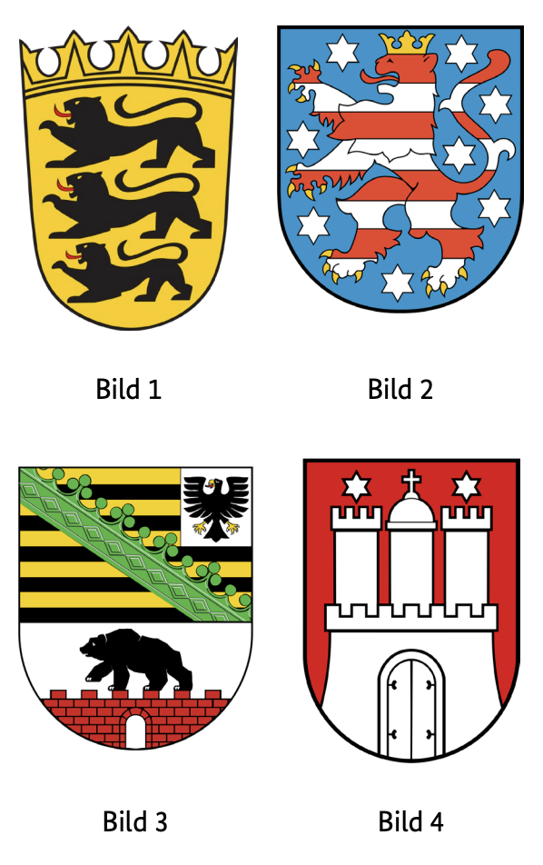

Resmi BAMF soru havuzundaki 10 Baden-Württemberg (BW) eyalet sorusunun Almanca ve Türkçe açıklamalı interaktif çözümleri. Soru üzerine tıklayarak bilginizi anında test edin.
Welches Wappen gehört zum Bundesland Baden-Württemberg?
TR: Baden-Württemberg eyaletine hangi arma aittir?

✅ Doğru Cevap: Şık A (Bild 1)
Soru, Alman federal eyaletleri ve onların resmi armalarına atıfta bulunmaktadır. Her federal eyaletin, belirli semboller, renkler ve motifler içeren tarihsel şekilli kendi arması vardır. Görevde, armaların birkaç numaralı görüntüsü gösterilir. Amaç, Baden-Württemberg eyaletine ait doğru armayı belirlemektir. Devlet armasının görünüşü hakkında bilgi ve diğer olası armalarla karşılaştırma bu konuda faydalıdır.
Die Frage bezieht sich auf deutsche Bundesländer und ihre offiziellen Wappen. Jedes Bundesland hat ein eigenes, historisch geprägtes Wappen mit bestimmten Symbolen, Farben und Motiven. In der Aufgabe werden mehrere nummerierte Abbildungen von Wappen gezeigt. Ziel ist es, das richtige Wappen zu identifizieren, das zum Bundesland Baden-Württemberg gehört. Dafür sind Kenntnisse über das Aussehen des Landeswappens sowie der Vergleich mit anderen möglichen Wappen hilfreich.
The question refers to German federal states and their official coats of arms. Each federal state has its own, historically shaped coat of arms with certain symbols, colours and motifs. In the task, several numbered images of coats of arms are shown. The aim is to identify the correct coat of arms, which belongs to the state of Baden-Württemberg. Knowledge of the appearance of the state coat of arms and comparison with other possible coats of arms are helpful for this.
السؤال يتعلق بالولايات الفيدرالية الألمانية وشعاراتها الرسمية. لكل ولاية اتحادية شعارها الخاص ذو الشكل التاريخي مع رموز وألوان وزخارف معينة. في المهمة، تعرض عدة صور مرقمة لشعارات النبالة. الهدف هو تحديد الشعار الصحيح الذي ينتمي إلى ولاية بادن-فورتمبيرغ. معرفة مظهر شعار الدولة ومقارنتها مع شعارات أخرى ممكنة تساعد في ذلك.
Питання стосується німецьких федеративних земель та їхніх офіційних гербів. Кожна федеральна земля має власний, історично сформований герб із певними символами, кольорами та мотивами. У цьому завданні показано кілька пронумерованих зображень гербів. Мета — визначити правильний герб, який належить землі Баден-Вюртемберг. Знання зовнішнього вигляду державного герба та порівняння з іншими можливими гербами корисні для цього.
Aşağıdaki soru Almanya'nın coğrafi bölünmesine atıfta bulunmaktadır. Almanya, federal eyaletler, idari bölgeler ve kırsal bölgelere ayrılmıştır. Baden-Württemberg eyaletine bağlı bir ilçe aranmaktadır. Cevap seçenekleri, her biri farklı bölgelerde veya federal eyaletlerde bulunan farklı bölgeler tarafından verilir. Doğru cevabı bulmak için Alman federal eyaletleri ve ilgili bölgeleri hakkında temel bilgi faydalı olacaktır.
Die folgende Frage bezieht sich auf die geografische Einteilung Deutschlands. Deutschland ist in Bundesländer, Regierungsbezirke und Landkreise unterteilt. Gesucht wird ein Landkreis, der zum Bundesland Baden-Württemberg gehört. Die Antwortmöglichkeiten nennen verschiedene Landkreise, die jeweils in unterschiedlichen Regionen oder Bundesländern liegen. Um die richtige Antwort zu finden, ist Grundwissen über die deutschen Bundesländer und ihre jeweiligen Landkreise hilfreich.
The following question refers to the geographical division of Germany. Germany is divided into federal states, administrative districts and rural districts. A district that belongs to the state of Baden-Württemberg is being sought. The answer options are given by different districts, each of which is located in different regions or federal states. In order to find the right answer, basic knowledge of the German federal states and their respective districts is helpful.
السؤال التالي يشير إلى التقسيم الجغرافي لألمانيا. تنقسم ألمانيا إلى ولايات اتحادية، ومناطق إدارية، ومناطق ريفية. يتم البحث عن منطقة تابعة لولاية بادن-فورتمبيرغ. خيارات الإجابة تعطى من قبل مناطق مختلفة، كل منها يقع في مناطق أو ولايات فيدرالية مختلفة. لإيجاد الإجابة الصحيحة، فإن المعرفة الأساسية بالولايات الفيدرالية الألمانية ومناطقها الخاصة مفيدة.
Наступне питання стосується географічного поділу Німеччини. Німеччина поділена на федеральні землі, адміністративні та сільські райони. Розглядається округ, що належить землі Баден-Вюртемберг. Варіанти відповідей надають різні округи, кожен з яких розташований у різних регіонах або федеральних штатах. Щоб знайти правильну відповідь, корисно мати базові знання про німецькі федеральні землі та їхні відповідні округи.
Welche Farben hat die Landesflagge von Baden-Württemberg?
TR: Baden-Württemberg devlet bayrağı hangi renklere sahip?
✅ Doğru Cevap: Şık B (schwarz-gold)
Soru, Alman federal eyaletleri ve sembolleri hakkında bilgi sahibidir. Baden-Württemberg, Almanya'nın 16 federal eyaletinden biridir ve her federal eyalet gibi kendi eyalet bayrağına sahiptir. Çoktan seçmeli formatta, farklı renk kombinasyonları sunulmaktadır. Doğru cevabı seçmek için Alman devletlerinin bayraklarını bilmeli veya Alman coğrafyası ve armakarını bilmeli.
Die Frage bezieht sich auf das Wissen über deutsche Bundesländer und ihre Symbole. Baden-Württemberg ist eines der 16 Bundesländer Deutschlands und besitzt wie jedes Bundesland eine eigene Landesflagge. In einem Multiple-Choice-Format werden verschiedene Farbkombinationen angeboten. Um die richtige Antwort zu wählen, sollte man die Flaggen deutscher Bundesländer kennen oder sich mit deutscher Geografie und Heraldik auskennen.
The question refers to the knowledge of German federal states and their symbols. Baden-Württemberg is one of the 16 federal states of Germany and, like each federal state, has its own state flag. In a multiple-choice format, different color combinations are offered. To choose the correct answer, one should know the flags of German states or be familiar with German geography and heraldry.
السؤال يتعلق بمعرفة الولايات الفيدرالية الألمانية ورموزها. بادن-فورتمبيرغ هي واحدة من 16 ولاية اتحادية في ألمانيا، ومثل كل ولاية فيدرالية، لديها علم ولاية خاص بها. في صيغة الاختيار من متعدد، تقدم مجموعات ألوان مختلفة. لاختيار الإجابة الصحيحة، يجب أن يعرف الشخص أعلام الولايات الألمانية أو يكون على دراية بالجغرافيا والشعارات الألمانية.
Питання стосується знань про німецькі федеративні землі та їхні символи. Баден-Вюртемберг — одна з 16 федеральних земель Німеччини і, як і кожна федеральна земля, має власний прапор землі. У форматі з кількома варіантами вибору пропонуються різні кольорові комбінації. Щоб обрати правильну відповідь, потрібно знати прапори німецьких земель або бути знайомим із географією та геральдикою Німеччини.
Die Landeshauptstadt von Baden-Württemberg heißt …
TR: Baden-Württemberg eyalet başkenti ...
✅ Doğru Cevap: Şık B (Stuttgart)
Soru, Alman federal devletlerinin siyasi ve coğrafi yapılarıyla ilgilidir. Baden-Württemberg, Almanya'nın 16 federal eyaletinden biridir ve hükümet ile parlamentonun sandalyelerinin bulunduğu belirlenmiş bir eyalet başkentine sahiptir. Cevap seçenekleri, eyaletteki tanınmış şehirleri belirtir; bunlardan sadece biri başkenttir.
Die Frage bezieht sich auf die politischen und geografischen Strukturen der deutschen Bundesländer. Baden-Württemberg ist eines der 16 Bundesländer Deutschlands und hat eine festgelegte Landeshauptstadt, in der Regierung und Parlament ihren Sitz haben. Die Antwortmöglichkeiten nennen bekannte Städte des Bundeslandes, von denen nur eine die Hauptstadt ist.
The question relates to the political and geographical structures of the German federal states. Baden-Württemberg is one of the 16 federal states of Germany and has a designated state capital in which the government and parliament have their seats. The answer options name well-known cities in the state, of which only one is the capital.
تتعلق المسألة بالهياكل السياسية والجغرافية للولايات الفيدرالية الألمانية. بادن-فورتمبيرغ هي واحدة من 16 ولاية اتحادية في ألمانيا ولها عاصمة ولاية محددة يشغل فيها الحكومة والبرلمان مقاعدهم. خيارات الإجابة تذكر مدنا معروفة في الولاية، منها واحدة فقط هي العاصمة.
Питання стосується політичних і географічних структур німецьких федеративних земель. Баден-Вюртемберг є однією з 16 федеральних земель Німеччини і має визначену столицю землі, у якій розташовані уряд і парламент. Варіанти відповідей називають відомі міста штату, з яких лише одне є столицею.
Soru, Alman coğrafyası üzerine yapılan çoktan seçmeli bir testten geliyor. Bir rakam veya listede, Almanya'nın federal eyaletleri 1'den 4'e kadar numaralarla işaretlenmiştir. Bu sayılar, hangi numaranın Baden-Württemberg eyaletine karşılık geldiğini belirlemek için kullanılacaktır. Amaç, federal eyaletlerin durumu ve sınıflandırması hakkında bilgi test etmektir.
Die Frage stammt aus einem Multiple-Choice-Test zur deutschen Geografie. Auf einer Abbildung oder Liste sind die Bundesländer Deutschlands mit den Zahlen 1 bis 4 gekennzeichnet. Anhand dieser Nummern soll erkannt werden, welche Zahl dem Bundesland Baden-Württemberg entspricht. Ziel ist es, Kenntnisse über die Lage und Einordnung der Bundesländer zu prüfen.
The question comes from a multiple-choice test on German geography. On a figure or list, the federal states of Germany are marked with the numbers 1 to 4. These numbers are to be used to determine which number corresponds to the state of Baden-Württemberg. The aim is to test knowledge about the situation and classification of the federal states.
السؤال يأتي من اختبار اختيار من متعدد حول الجغرافيا الألمانية. في الشكل أو القائمة، يتم تمييز الولايات الفيدرالية في ألمانيا بالأرقام من 1 إلى 4. تستخدم هذه الأرقام لتحديد أي رقم يتوافق مع ولاية بادن-فورتمبيرغ. الهدف هو اختبار المعرفة حول وضع الولايات الفيدرالية وتصنيفها.
Питання походить із тесту з вибором відповіді з німецької географії. На рисунку або списку федеральні землі Німеччини позначені номерами від 1 до 4. Ці числа використовуються для визначення, яке число відповідає землі Баден-Вюртемберг. Мета — перевірити знання про ситуацію та класифікацію федеральних земель.
Welche Ministerin / welchen Minister hat Baden-Württemberg nicht?
TR: Baden-Württemberg'in bakanı hangisi?
Değil mi?
✅ Doğru Cevap: Şık D (Außenministerin / Außenminister)
Almanya'daki hayat için önemli bir soru
Wichtige Frage für das Leben in Deutschland
Important question for life in Germany
سؤال مهم للحياة في ألمانيا
Важливе питання для життя в Німеччині
300 Genel Soruyu ve Eyalet Sorularını Eksiksiz Çalışın
DeutschLernen LiD Trainer'da tüm 310 soruyu 5 farklı dilde (Türkçe, İngilizce, Arapça, Ukraynaca, Almanca) çözebilir, deneme sınavı simülasyonu yapabilirsiniz.